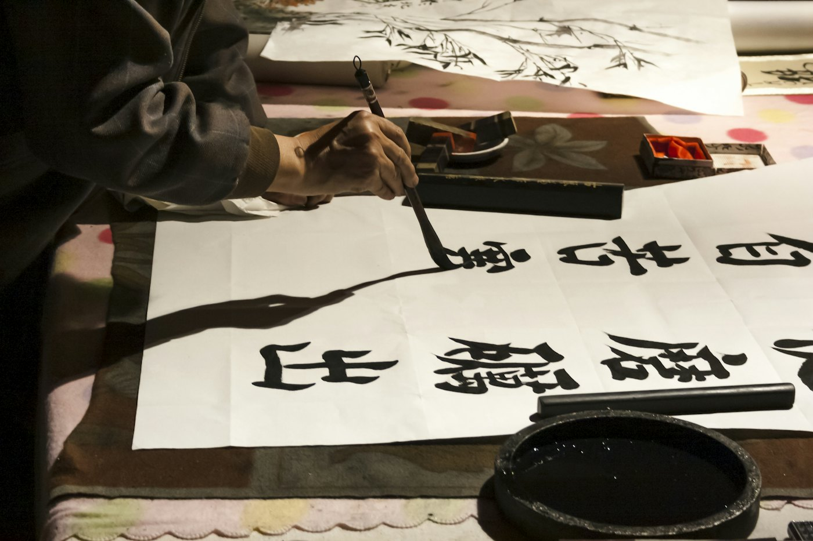
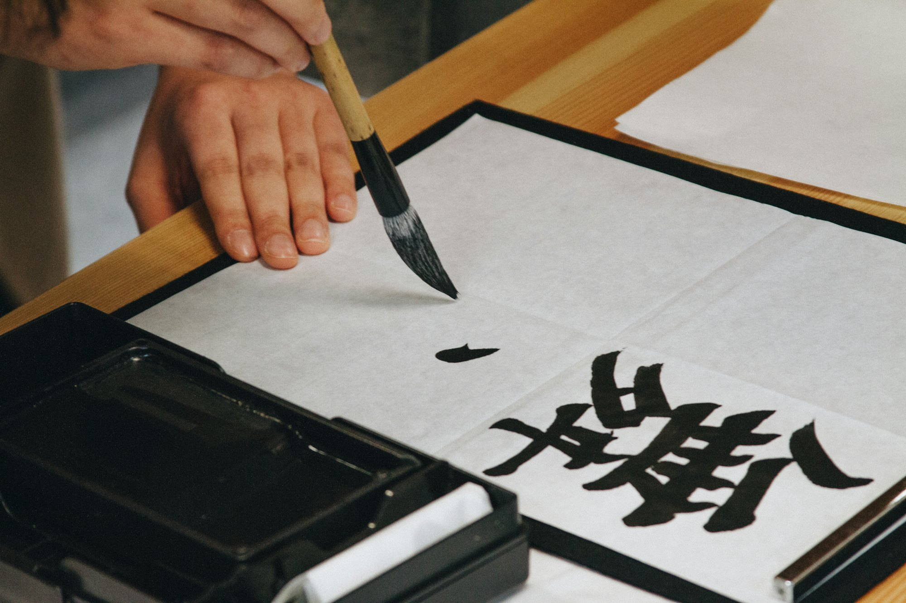

手描きの版下
文字の形は、ひとつずつ手で描き起こします。

手彫り印鑑 高田馬場一丁目
昭和38年創業。手描きの版下と職人の手彫りで、これまでに4万本を超える印鑑をお作りしてきました。
名前を入れて「押す」を押すと、印影のイメージができます。
イメージです。実際の印鑑は、職人が版下を手で描き起こして彫ります。大きさは一般的なめやすです。
手で描いた版下をもとに機械で荒彫りし、仕上げは職人の手彫りで。機械彫りの正確さと手彫りの良さを合わせた、二刀流の印鑑づくりです。
急ぎで実印が必要になった方にも、できるだけ早くお届けしています。

文字の形は、ひとつずつ手で描き起こします。
用途に合わせた大きさと書体をご提案します。
| ご注文 | お電話・メールで承ります |
|---|---|
| 仕上がり | お急ぎの方はご相談ください |
書体や材質のご相談、お急ぎの仕上がりも、お電話かメールでどうぞ。